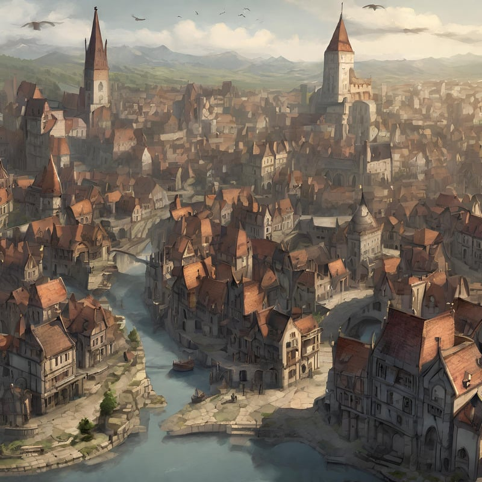
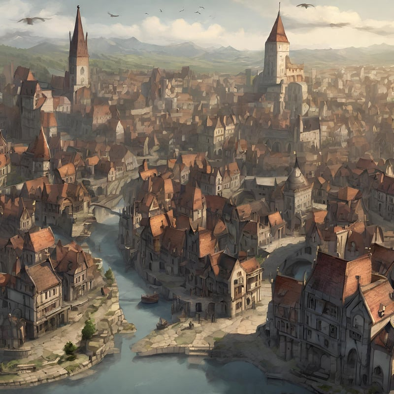

Plot Summary
"The Kingkiller Chronicle" is a fantasy series by Patrick Rothfuss, currently comprising two books, "The Name of the Wind" and "The Wise Man's Fear."
"The Name of the Wind" is a captivating fantasy novel by Patrick Rothfuss that follows the life of Kvothe, a gifted young musician and magician. The story begins in a quiet village where Kvothe grows up as a talented performer and inquisitive scholar. However, tragedy strikes, forcing him to embark on a quest for knowledge and power. As he grows older, Kvothe's journey takes him to the prestigious University, where he hones his magical abilities and uncovers secrets about the world's hidden forces. Along the way, he faces challenges, forms deep friendships, and encounters dangerous adversaries, all while seeking to unravel the mysteries of his own past. The narrative beautifully weaves together Kvothe's past and present, revealing his complex character and the multifaceted world he inhabits. The novel explores the development of his extraordinary talents and the circumstances that shape him into a legendary figure. Through a combination of magic, music, and intellectual pursuits, Kvothe's life unfolds in a mesmerizing tale of ambition, love, and the relentless pursuit of truth. Rothfuss's prose and world-building immerse readers in a richly detailed and imaginative story that leaves them eagerly anticipating the next chapter of Kvothe's epic journey.
"The Wise Man's Fear" is the second installment in Patrick Rothfuss's epic fantasy series, continuing the riveting tale of Kvothe. Following the events of the first book, Kvothe's quest for knowledge and power takes him to new and exotic lands. His adventures lead him to the court of the powerful Maer Alveron, where he faces political intrigue, treacherous enemies, and the enigmatic Fae realm. Along the way, Kvothe further hones his magical abilities, delves into ancient mysteries, and forms meaningful connections with fascinating characters. This novel delves deeper into Kvothe's character, uncovering more of his past and the motivations that drive him. The story balances action, romance, and intellectual pursuits as Kvothe navigates through the complex tapestry of his world. Readers are treated to breathtaking descriptions of foreign cultures and landscapes, as well as the growth of Kvothe's reputation as a legend in the making. With Rothfuss's skillful storytelling, "The Wise Man's Fear" keeps readers eagerly turning pages, eager to discover the next chapter in Kvothe's remarkable journey of self-discovery and adventure.
Controversy
The controversy surrounding "The Doors of Stone," the third book in Patrick Rothfuss's Kingkiller Chronicle series, primarily stems from the book's extensive delays. Fans had been waiting for many years, and the lack of a confirmed release date led to frustration and impatience.
Additionally, the high expectations set by the series' first two books, which garnered critical acclaim and a dedicated fan base, intensified the anticipation for the third installment. The author's open discussions about personal struggles, including mental health issues affecting his writing process, further prolonged the wait and added to the controversy.
While many fans were understanding and supportive, the uncertainty, combined with the pressure to deliver a satisfying conclusion to such a beloved series, contributed to the ongoing controversy. As of my last update in September 2021, there was no official release date for "The Doors of Stone," leaving fans eager for any news or updates from Patrick Rothfuss or his publisher.
Themes
Identity and Destiny: One of the central themes of the series is the protagonist Kvothe's quest to understand his own identity and destiny. He is a gifted musician, magician, and scholar, and the story explores how he navigates his talents and the expectations that come with them.
Magic and Knowledge: Magic and knowledge play a significant role in the series. Kvothe attends the University to learn the arcane arts of naming and sympathy. The pursuit of knowledge and the mysteries of magic are themes that run throughout the story.
Music and Artistry: Music is an integral part of Kvothe's character. The power of music and artistry, as well as their connection to emotions and storytelling, is explored in-depth throughout the series.
The Power of Stories: The narrative emphasizes the importance of storytelling and how stories can shape reality. Kvothe's own story is being told to a scribe, and the way he presents his life's events, as well as the legends and myths woven into the tale, are central to the narrative.
Conflict and Adversity: Kvothe faces numerous challenges, conflicts, and adversaries on his journey. The theme of overcoming adversity and the consequences of one's actions are recurring motifs.
Author: Sequoyah Geber + ChatGTP
October 7, 2023
Similar Book Recommendations
- "Mistborn" series by Brandon Sanderson
- "The Lies of Locke Lamora" (Gentleman Bastard series) by Scott Lynch
- "The Name of All Things" (A Chorus of Dragons series) by Jenn Lyons
- "The Wheel of Time" series by Robert Jordan (completed by Brandon Sanderson)
- "The Lightbringer" series by Brent Weeks
- "The Stormlight Archive" series by Brandon Sanderson